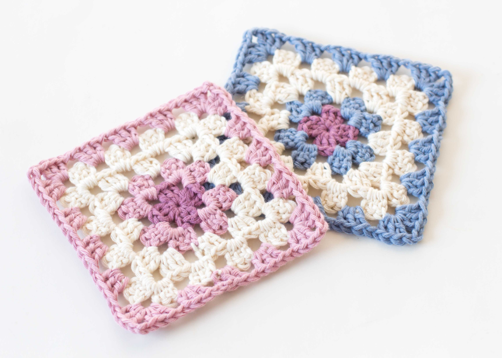

Granny Square Pattern

- R1: [ch2, 2DC, ch1, (3DC, c h1) 3x] in MR. Ss 1st st. FO leaving 2-3 inches.
Insert hook into back loop, pull through the tail, repeat all around de corner.
Flip granny over, insert hook into front loop (original back loop) and pull through tail for 3-4 st.
- Don’t cut the tail until it’s locked down after working over it.
- R2: Attach color 2 by inserting hook in any ch1 gap sp, ss by YO with both tails and pull through (counts as 1st st).
Drop tail, ch1. Working over the color2 tail, 2DC, ch 1, 3DC into same ch1 gap sp.
*[(3DC, ch1, 3DC) into next gap sp] 3x. SS in 1st st. FO same as R1.
- Ch1 is only for the corners, not between all 3DC clusters. Remember to work over color1 tail to lock it down.
- R3: Attach color3 by inserting hook in any ch1 corner sp, ss by YO with both tails and pull through (counts as 1st st).
Drop tail, ch1. Working over the color3 tail, 2DC, ch 1, 3DC into same ch1 gap sp.
[3DC in next gap sp, (3DC, ch1, 3DC) in corner gap sp] 3x. 3DC, ss in 1st st. FO same as R1.
- Remember to work over color2 tail to lock it down.
- R4: Attach color4 by inserting hook in any ch1 corner sp, ss by YO with both tails and pull thrugh (counts as 1st st). Drop tail, ch1. Working over the color4 tail, 2DC, ch 1, 3DC into same ch1 gap sp. [3DC in each 2 next gap sp, (3DC, ch1, 3DC) in corner gap sp] 3x. 3DC in each 2 next gap sp, 22 in 1st st. FO same as R1. Remember to work over color3 tail to lock it down.
- Note: On the next round, the final round of the granny square, you will work a ch2 at each corner instead of a ch1.
- R5: Attach black yarn by inserting hook in any ch1 corner sp, ss by YO with both tails and pull through (counts as 1st st). Drop tail, ch1. Working over the color4 tail, 2DC, ch 2, 3DC into same ch1 gap sp. [3DC in each 2 next gap sp, (3DC, ch2, 3DC) in corner gap sp] 3x. 3DC in each 2 next gap sp, ss in 1st st.